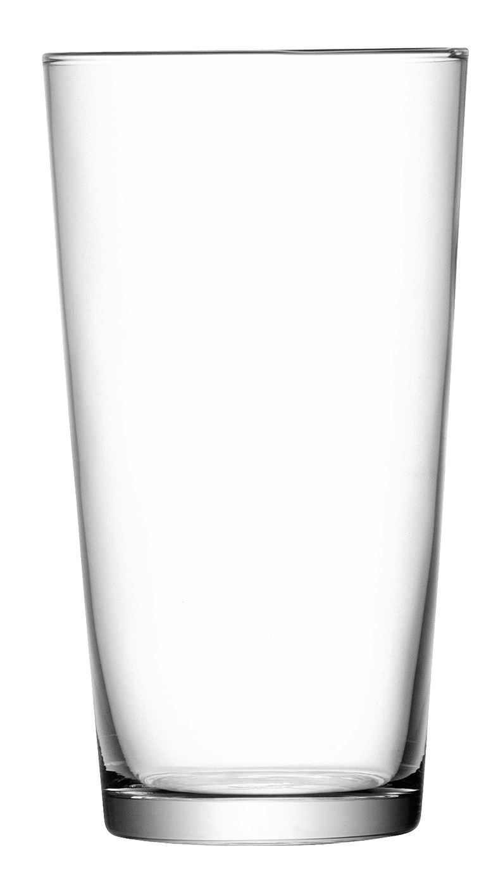

>Be seppe
>driving along as i normally did pretty earling in the morning on my way to work.
>Taking the 17 Entrance after the carvel i was stuck in a line to get onto the highway.
Then Suddenly...
I witnessed one of the most alien activities i have seen in my entire life.
Not many things feel this foul to look at.
While waiting in this traffic, doing absoloutley nothing, i look into my rear view window and i am appauled.
There is a Matte Black Tesla behind me, and inside is an Indian Gentlemen.
He is drinking coffee...
OUT OF A MUG?!!!?!

Not a dunkin Donughts Mug, not a disposable cup, but a Porcelain Mug.
a peice of china
an assortment of dishware
'yre toby mug
The cousin of the glass.

This meer mortal drives the most futuristic car known to man, yet brought a mug into his car.
The same guy who spent 47K on a car was not able to hear about the hottest invention of 1978, the travel mug.
I can only imagine the mental fortitude it must take to make a cup of coffee in your kitchen, then pour it into a mug, and walk outide to not return for hours.
What did he do with the mug once he finished his coffee?
Did he place it in the cupholder till he got home?
Did he throw and shatter it into a large plastic bin of every mug he used that month, having his maid clean it out every month and having an amazon go subscription to buy an identical mug every day and have it shipped the next day?
The world may never know...
Here i sit...i am forever dissapointed.
9/7/2023